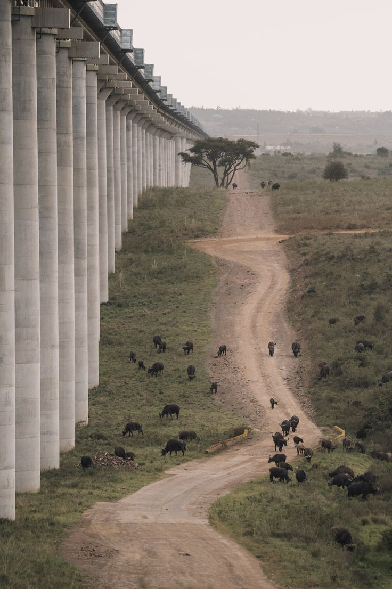
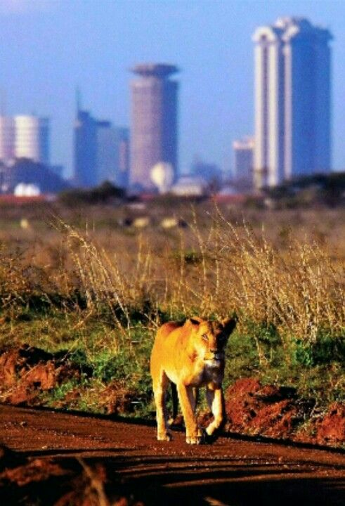
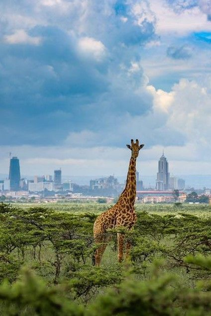

Nairobi National Park
Nairobi National Park is a national park in Kenya. It is located south of Nairobi.
Explore Nairobi National ParkAbout Nairobi National Park
Nairobi National Park is a national park in Kenya. It is located south of Nairobi. The park has a size of 117 km2 (45 sq mi) and is home to a wide variety of wildlife, including lions, leopards, cheetahs, hyenas, buffalos, giraffes, zebras, wildebeests, and rhinoceros. It is also home to over 400 species of birds.
 Things to Do in Nairobi National Park
Game Drives
Game drives are a popular activity in Nairobi National Park. Visitors can drive through the park and see a variety of wildlife, including lions, leopards, cheetahs, hyenas, buffalos, giraffes, zebras, wildebeests, and rhinoceros.

Bird Watching
Nairobi National Park is home to over 400 species of birds. Visitors can go bird watching and see a variety of species, including eagles, vultures, and storks.
Explore Nairobi National Park
Nairobi National Park is a great place for wildlife viewing and bird watching. The park is home to a variety of wildlife, including lions, leopards, cheetahs, hyenas, buffalos, giraffes, zebras, wildebeests, and rhinoceros. It is also home to over 400 species of birds.
Some popular activities in Nairobi National Park include game drives and bird watching.
Whether you're looking for a relaxing vacation or an adventurous getaway, Nairobi National Park has something for everyone.
Contact Us
(+254) 798-237947